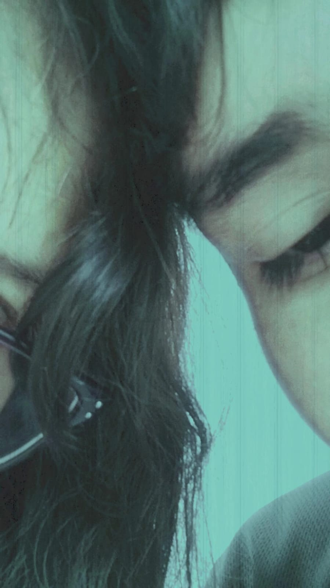

MI AMOR POR TI..
Siento un amor sincero por ti que ha ido creciendo con el tiempo. No puedo explicar exactamente cuándo empezó, pero cada día me enamoro más de ti. Me encanta tu forma de ser, tu manera de ver el mundo y cómo me haces sentir. Tu belleza física es un plus, pero lo que realmente me cautivó fue tu interior. Tu sonrisa, tus ojos, tus gestos... todo en ti es perfecto para mí.



Mirando estas fotos me doy cuenta de lo rápido que pasó todo. Recuerdo la primera vez que te vi, me pusiste muy nervioso, pero al mismo tiempo me sentí tan atraído hacia ti. Y así, con cada encuentro, ese nerviosismo se transformaba en una emoción indescriptible, una mezcla de felicidad y emoción. Esas fotos me recuerdan a la perfección cómo poco a poco me enamore de ti...
Recuerdo la primera vez que me besaste, sentí como si el mundo se detuviera. En ese momento supe que había algo especial entre nosotros. Tu forma de hacerme reír y de escucharme me enamoró por completo. Eres la persona más hermosa que conozco, tanto por dentro como por fuera.